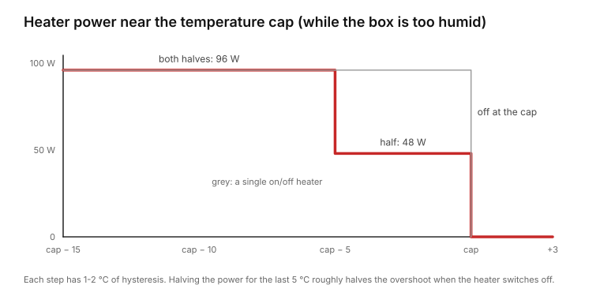
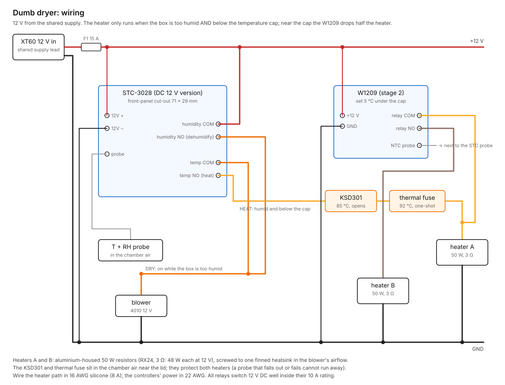

Dumb Filament Dryer
The cheapest box that keeps a reel dry: a single-reel housing, a 96 W heater and an off-the-shelf STC-3028 humidity + temperature controller. No microcontroller, no firmware, no scale, no Wi-Fi. The heater runs only while the box is too humid and below a temperature cap, and a W1209 thermostat drops half the heater for the last 5 °C so it doesn't overshoot.

What it gives up
| 1-roll (smart) | Dumb | |
|---|---|---|
| Parts per box | about US$174 | about US$53 |
| Controller | ESP32-C3 board and firmware | STC-3028 + W1209, set with buttons |
| Temperature control | PID, about ±0.5 °C | Two-step on/off, about ±2 °C |
| Energy | About the same: the insulation decides how much heat is lost. The dumb box can use less, because it only heats while the air is humid instead of running timed cycles. | |
| Drying | Timed cycles per material, vent pulses | Holds a humidity target; desiccant and a passive vent carry the moisture away |
| Weight, filament left, runout, motion | Yes | No |
| Dashboard, alerts | Yes | No: the STC-3028's display shows temperature and humidity on the front |
| Overheat protection | Firmware cut-outs + KSD301 + thermal fuse | KSD301 + thermal fuse |
How it works
The STC-3028 has one probe (temperature and humidity, on a cable) and two relays. Their contacts are wired in series in front of the heater:
| Box is… | Humidity relay (dehumidify) | Temperature relay (heat) | Blower | Heater |
|---|---|---|---|---|
| Dry enough | open | (either) | off | off |
| Humid, well under the cap | closed | closed | on | 96 W (both halves) |
| Humid, within 5 °C of the cap | closed | closed | on | 48 W (the W1209 drops half B) |
| Humid, at the cap | closed | open | on | off |

Relative humidity falls as air warms, so the humidity setpoint decides how hard the box works. With a low setpoint (about 10 %) the heater holds near the temperature cap until the air is really dry: that's drying. With a higher one (about 25 %) the heater only warms the box a little when it gets damp: that's storage. The desiccant does most of the work in storage; the small passive vent in the lid lets moisture out while drying.
Wiring

- Heater: two aluminium-housed 50 W resistors (RX24, 3 Ω, 48 W each at 12 V) on one finned heatsink, with thermal paste, in the blower's airflow.
- The KSD301 (85 °C) and thermal fuse (92 °C) protect both halves. They sit in the chamber air near the lid. A dumb controller has one probe; if it fails or falls out of the airflow, they are what stops the heater.
- Probes: the STC-3028 probe and the W1209's NTC probe side by side in the chamber air, away from the heater outlet.
- Wire: 16 AWG silicone in the heater path (about 8 A), 22 AWG for the rest. Every relay switches 12 V DC well inside its 10 A rating.
Settings
Menu names differ a little between STC-3028 batches; the steps below match the usual manual. Set the controller to heating for temperature and dehumidifying for humidity, both with no start-up delay.
| Use | STC-3028 temperature cap | STC-3028 humidity setpoint | W1209 setpoint |
|---|---|---|---|
| Dry PLA / PLA+ | 50 °C, difference 1 °C | 10 %, difference 3 % | 45 °C |
| Dry TPU | 55 °C | 10 % | 50 °C |
| Dry PETG | 65 °C | 10 % | 60 °C |
| Dry ABS / ASA / Nylon / PC | 70 °C | 10 % | 65 °C |
| Store any filament | 45 °C | 25 %, difference 5 % | 40 °C |
W1209: press SET and use +/− for the setpoint. Hold SET for the parameters: P0 = H (heating), P1 = 1.0 (hysteresis), P2 = 80 (upper limit), P3 = 0, P4 = 0 (offset), P5 = 0 (no delay), P6 = OFF (no alarm). Check the STC-3028's probe range on its label or manual: the common ones read to 80 °C, enough for a 70 °C cap.
Housing
The 1-roll housing without the electronics bay's scale: one reel on an 8 mm axle, a heater duct with the blower and the heatsink, a desiccant cassette, and a lid on a printed hinge.
- Reel: a fixed 8 mm steel axle (cut from a 250 mm linear shaft) drops into open U-slots, so loading stays top-down. Two printed hub cones with a 608ZZ each spin on it and centre any hub from about 50 to 75 mm. A light felt pad on one cone stops the reel overrunning.
- Lid: printed hinge knuckles along the back edge with a full-length 8 mm pin (the second shaft), a silicone D-seal, and two toggle latches.
- Front: a 71 × 29 mm cut-out for the STC-3028, so its display shows temperature and humidity. The W1209 sits inside; its display can show through a small window, or stay hidden once it's set.
- Vent and exit: two 3 mm holes in the lid as a passive vent, and a PC4 fitting with PTFE tube to the printer.
Parts
About US$53 per box. Search terms are for AliExpress unless marked Tronic. Also available as bom.csv.
Control (≈ US$10)
| Part | Qty | AliExpress search | ≈ US$ | Why this one |
|---|---|---|---|---|
| Humidity + temperature controller | 1 | STC-3028 DC 12V temperature humidity controller (Tronic lists it at Rs. 2,540, out of stock) | 9 | One probe, two relays: humidity (dehumidify mode) and temperature (heat mode), wired in series in front of the heater |
| Second heat stage | 1 | Tronic: W1209 12 V thermostat (Rs. 420) | 1.4 | Switches off half the heater 5 °C under the cap, so the box creeps up to temperature instead of overshooting |
Heating and air (≈ US$8)
| Part | Qty | AliExpress search | ≈ US$ | Why this one |
|---|---|---|---|---|
| Heater halves | 2 | RX24 50W 3R aluminium housed resistor | 4 | 3 Ω at 12 V is 48 W each, 96 W together; screw both to the heatsink |
| Heatsink | 1/2 | Tronic: aluminium heat sink 200x56x30 mm (Rs. 1,000), cut in half for two boxes | 1.7 | Finned, in the blower's airflow; thermal paste under the resistors |
| Blower | 1 | Tronic: 4010 blower 12 V (Rs. 440) | 1.5 | Moves chamber air over the heatsink; runs whenever the box is too humid |
| Thermostat cut-out | 1 | KSD301 85C normally closed 10A | 0.5 | Opens at 85 °C and closes again as it cools: catches a stuck relay or a probe that fell out |
| Thermal fuse | 2 (1 spare) | thermal fuse 92C 10A | 0.3 | One-shot last resort, in series with the KSD301 |
Power and wiring (≈ US$4)
| Part | Qty | AliExpress search | ≈ US$ | Why this one |
|---|---|---|---|---|
| 12 V connector | 1 pair | XT60 male female pair | 0.5 | From the shared 12 V supply |
| Fuse | 1 | Tronic: ATO blade fuse holder (Rs. 80) + 15 A ATO fuse (Rs. 30) | 0.4 | On the + lead |
| Heater wire | 2 m | 16 AWG silicone wire red black | 2 | About 8 A in the heater path; silicone stays soft in the heat |
| Signal and fan wire | 2 m | 22 AWG silicone wire | 1 | Controllers, blower and probe extension |
Mechanical (≈ US$15)
| Part | Qty | AliExpress search | ≈ US$ | Why this one |
|---|---|---|---|---|
| Reel axle and lid hinge pin | 2 | Tronic: 8 mm linear shaft 250 mm (Rs. 350) | 2.3 | One cut to about 125 mm for the reel axle, one as the full-length hinge pin |
| Bearings | 2 | Tronic: 608ZZ (Rs. 40) | 0.3 | Pressed into the printed hub cones, spinning on the fixed axle |
| Lid latches | 2 | mini stainless toggle latch | 3 | Pull the lid onto the seal (or print a cam latch) |
| Lid seal | 3 m | silicone D seal strip self adhesive | 4 | Stays soft at 70 °C |
| Desiccant | 150 g | indicating silica gel orange | 2 | Holds the humidity down between heats |
| Filament exit | 1 m + 1 | PTFE tube 2x4mm + PC4-M10 fitting | 2 | From the box to the printer |
| Screws and inserts | 1 set | M3 heat set insert + M3 screw kit | 1 | Shared with the other boxes |
Printing (≈ US$16)
| Part | Qty | AliExpress search | ≈ US$ | Why this one |
|---|---|---|---|---|
| Filament for the housing | ~0.8 kg | ABS or ASA | 16 | Not PLA: the box runs at up to 70 °C |
Build and test
- Bench, heater disconnected: power the STC-3028 and W1209 from 12 V and enter the settings. Breathe on the probe: the humidity relay should click and the blower start. Warm the probe in your hand past the W1209 setpoint and then past the cap: the relays should drop in that order.
- Safety parts: check the KSD301 opens with a hot-air gun (it clicks open at about 85 °C) before fitting it.
- First heat, lid open, attended: connect the heater and watch it reach the cap and switch down to half, then off.
- Lid closed: a full drying cycle with an empty reel, checking the box surfaces stay comfortable to touch.